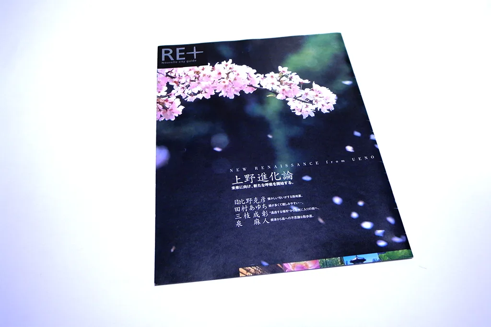
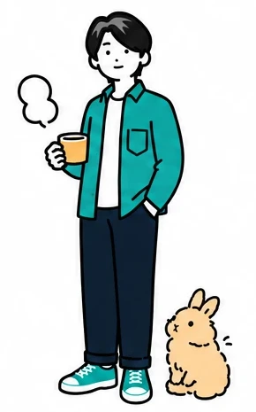
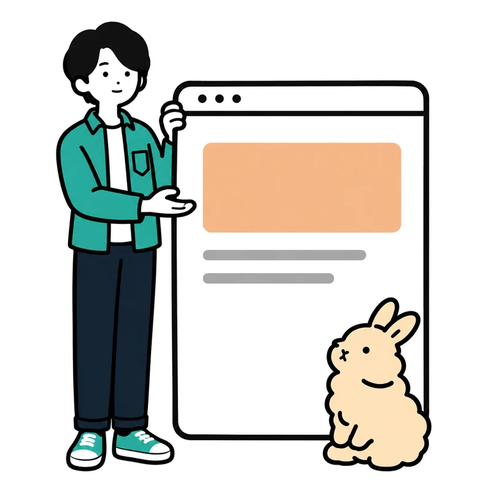
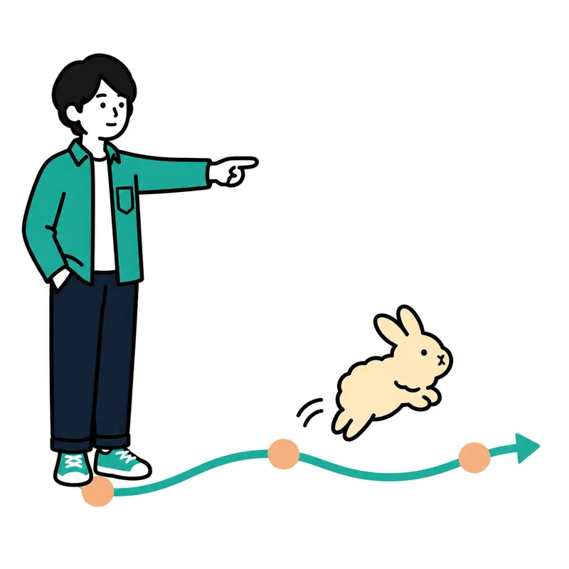
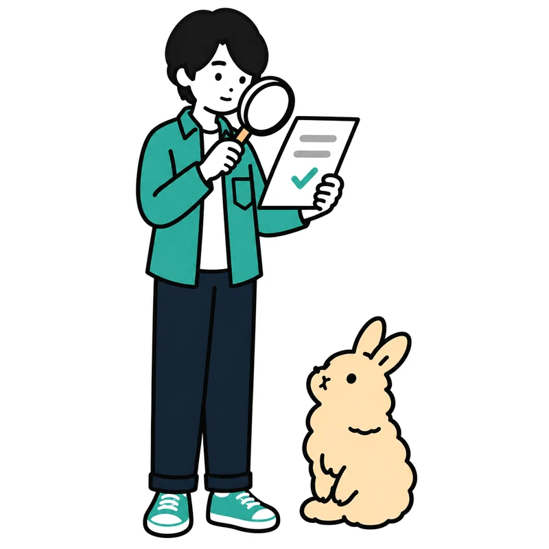
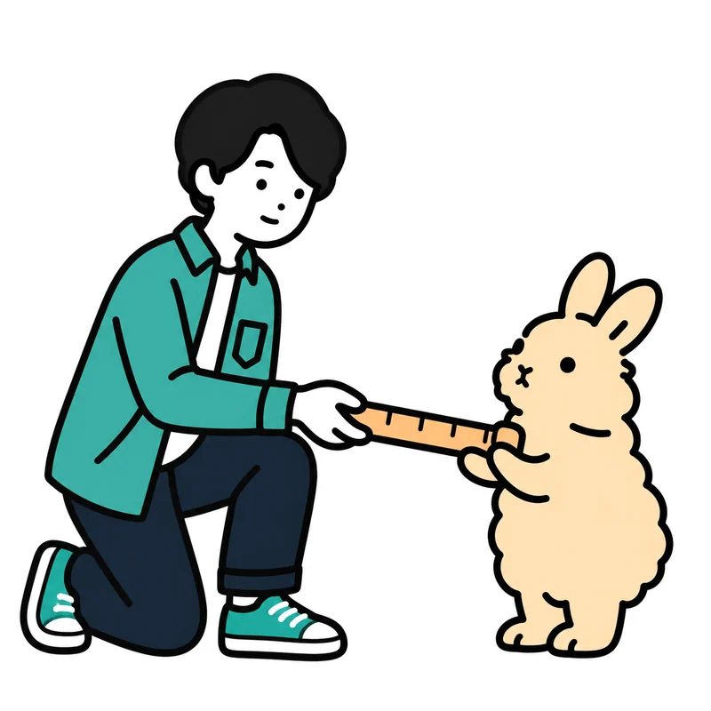
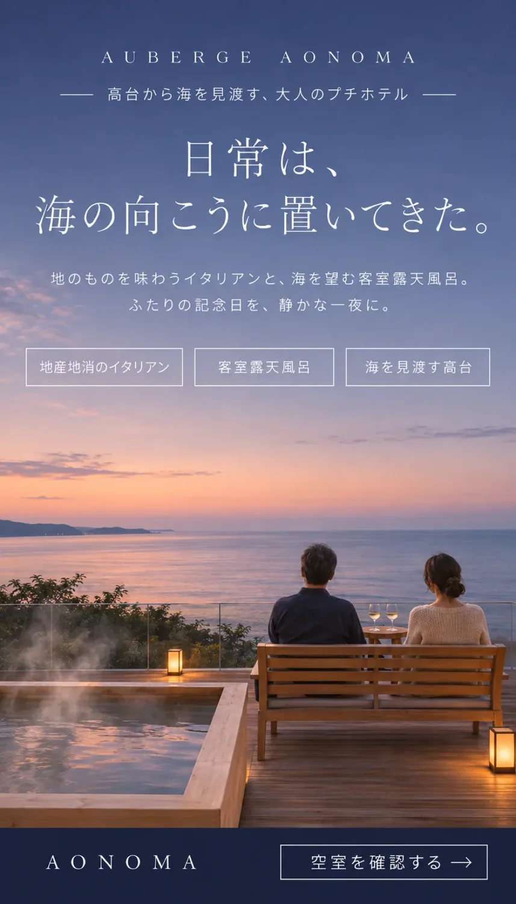
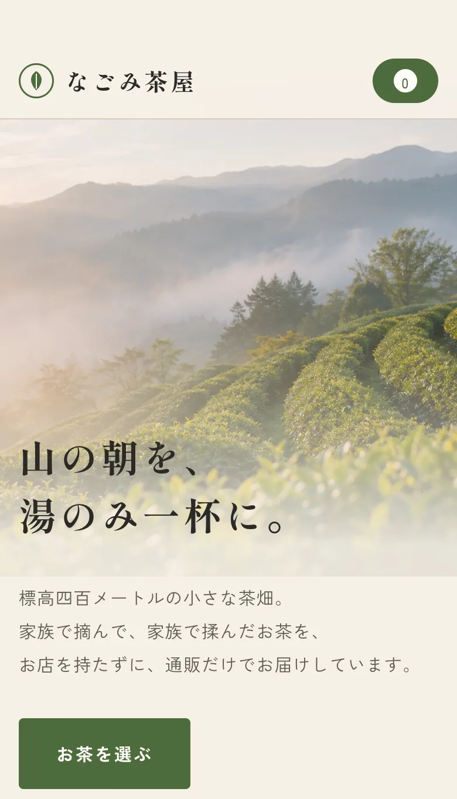
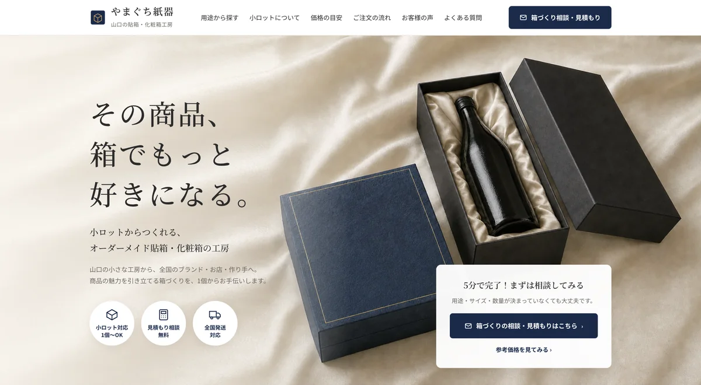

AIでつくる、お客さんが立ち寄るしかけ。
ホームページ、LP、SNS。お客さんが足を止める入口を、AIと、30年のデザインの目でつくります。
このページの下で、メールアドレスだけで登録できます。

ホームページ、LP、SNS。お客さんが足を止める入口を、AIと、30年のデザインの目でつくります。
このページの下で、メールアドレスだけで登録できます。
ABOUT
ホームページを開いた人も、SNSを流し見する人も、足を止めるのは一瞬です。その一瞬に、何を見せて、何を削るか。
Drop. は、AIの速さと、30年つづけてきたデザインの判断を組み合わせて、小さな会社の集客を手伝っています。お客さんが思わず立ち寄る「しかけ」を、いっしょにつくります。
SELECTED WORKS
タブロイド誌、周年記念パンフレット、自治体の広報誌、ポスター、雑誌まで。





CLIENTS
スターティアホールディングス／サイクラーズグループ／三重県東員町／YAMATO Hotel&Residence／ラティス・テクノロジー／coco／NEC／Asahi／U-NEXT／DHC （順不同・敬称略）
PROFILE

Drop.グラフィックデザイナー／アートディレクター
デザイン会社で雑誌や広告のデザインを担当したのち、2008年に独立して「Drop.」を始めました。デザイン歴は30年を超えます。
会社案内、パンフレット、雑誌、書籍、ロゴ。紙でつづけてきた編集とデザインの判断に、いまはAIを組み合わせて、小さな会社の発信を手伝っています。相棒は、うさぎです。
SERVICE
お客さんが最初に目にするところを、AIの速さと、30年のデザインの判断で整えます。進め方は、この4つです。

ホームページ・LP・バナー・SNSの投稿画像。AIで素早く形にして、デザイナーの目で仕上げます。

見つけてもらう、読んでもらう、登録や問い合わせをしてもらう。SNSからホームページ、メールまでの道すじを設計します。

いまのホームページやチラシを見て、どこで素通りされているか、直す順番を出します。

AIの使い方と、判断のものさしを社内に残す伴走。デザイナーがいなくても、自分たちで続けられるように。
SAMPLE
架空のお店を想定してつくった LP・HP のサンプルです。
押すと、ページ全体を見られます。




ご相談は、無料メールに登録のうえ、届いたメールにそのまま返信してください。Drop. が直接お返事します。
LETTERS
デザインとAIの、すぐ試せる話をメールで届けます。読むだけでも、相談の入口としても。
配信は Substack を使っています。いつでも解除できます。